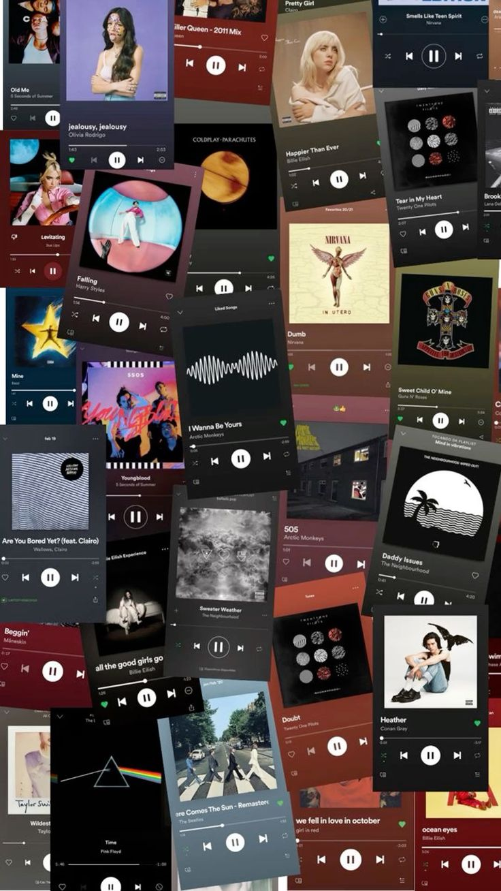

Name: Andrei Catu
Nickname: Andrei, Drei or Aj
Zodiac Sign: Pisces
Chinese Zodiac Sign: Goat
Blood Type: O
Height: 5'10
Weight: 60kg
MBTI Type: ISTJ
Nationality: Filipino
ABOUT
Hey there! I'm Andrei Catu, a 2nd-year BSIT student with a passion for all things tech. Currently diving into programming, software development, and cybersecurity, I'm on a mission to become a skilled IT professional.
ACHIEVEMENTS
-
Quiz Bee Participant – Holy Angel School of Caloocan Inc. (2017)
-
Top Student from 1st to 4th quarter– Holy Angel School of Caloocan Inc. (2017)
-
Academic Excellence Awardee with Honors– Holy Angel School of Caloocan Inc. (2018)
-
ISVBL Men’s Volleyball Team- Bronze medal– Holy Angel School of Caloocan Inc. (2018)
-
MILO Little Olympics NCR & South Luzon– Holy Angel School of Caloocan Inc. (2018)
-
Academic Excellence Awardee with Honors– Holy Angel School of Caloocan Inc. (2019)
-
COCC Organization– Holy Angel School of Caloocan Inc. (2019)
-
ISVBL Men’s Volleyball Team- Bronze medal– Holy Angel School of Caloocan Inc. (2019)
-
Academic Excellence Awardee with Honors– Holy Angel School of Caloocan Inc. (2020)
-
CAT Organization Class Magilas– Holy Angel School of Caloocan Inc. (2020)
-
CAT Bravo Commander– Holy Angel School of Caloocan Inc. (2020)
-
CORPS OF CADETS Silent Driller– Holy Angel School of Caloocan Inc. (2020)
-
ISVBL Men’s Volleyball Team- Bronze medal– Holy Angel School of Caloocan Inc. (2020)
-
Academic Excellence Awardee with Bronze medal– Holy Angel School of Caloocan Inc. (2021)
-
Top Quipper Student– Holy Angel School of Caloocan Inc. (2021)
-
Academic Excellence Awardee with Bronze medal– Holy Angel School of Caloocan Inc. (2022)
-
Loyalty award– Holy Angel School of Caloocan Inc. (2022)
-
Dean's List(1st term)- National University Fairview (2022)
INTEREST
Playing Volleyball
Watching Kdrama
Listening to Music

Collecting Kpop Merchandise
Attending Kpop Concerts